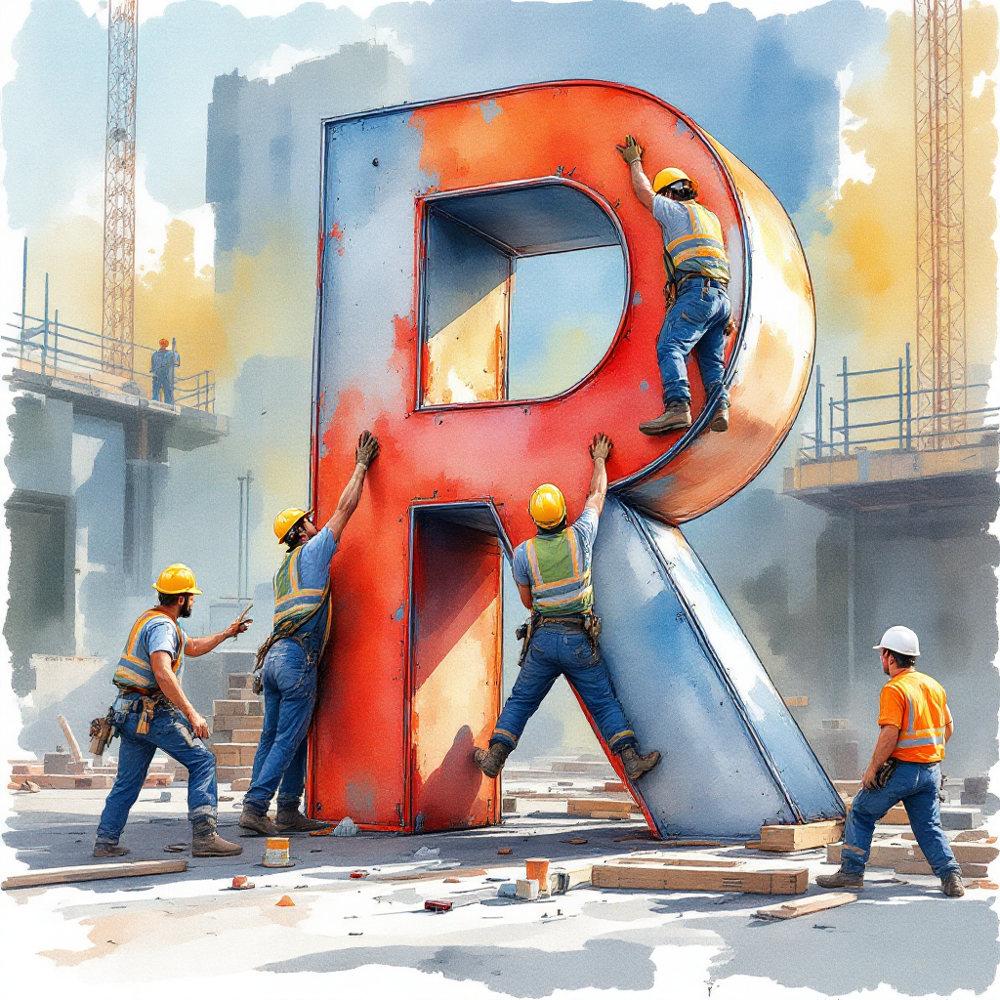

# Create a sample data frame
df <- data.frame(A = c(1, 2, 3),
B = c(4, 5, 6),
C = c(7, 8, 9),
D = c(10, 11, 12))
# Delete columns B and D using subset()
new_df <- subset(df, select = -c(B, D))Introduction
When working with data frames in R, it’s common to encounter situations where you need to delete or drop multiple columns at once. Whether you’re cleaning up your dataset, removing unnecessary variables, or narrowing down your analysis, knowing how to efficiently remove multiple columns is a crucial skill for any R programmer. In this article, we’ll explore several methods to delete multiple columns in Base R, providing clear examples for each approach.
Methods to Delete Multiple Columns in R
Using the Subset() Function
The subset() function in R allows you to select or remove columns from a data frame based on their names. To delete multiple columns using subset(), simply specify the data frame and the columns you want to keep, omitting the ones you want to remove.
In this example, we create a sample data frame df with four columns: A, B, C, and D. To remove columns B and D, we use the subset() function and specify the columns to keep using the select argument. The minus sign - before the column names indicates that we want to exclude those columns.
Using the Select() Function from dplyr
If you’re using the dplyr package, you can leverage the select() function to remove multiple columns from a data frame. The select() function allows you to specify the columns you want to keep or remove using various helper functions.
# Load the dplyr package
library(dplyr)
# Delete columns B and D using select()
new_df <- df %>% select(-B, -D)In this approach, we use the select() function from dplyr and specify the columns to remove by prefixing them with a minus sign -. The %>% operator is used to pipe the data frame df into the select() function.
Using the Minus Sign
Another straightforward way to delete multiple columns in R is by using the minus sign - directly on the data frame. This method allows you to specify the column names or indices you want to remove.
# Delete columns B and D using the minus sign
new_df <- df[, -c(2, 4)]
new_df A C
1 1 7
2 2 8
3 3 9Here, we use the square bracket notation [] to subset the data frame df. Inside the brackets, we specify the rows (left blank to include all rows) and the columns to remove using the minus sign - followed by a vector of column names.
Assigning NULL to Columns
You can also remove multiple columns from a data frame by assigning NULL to the desired columns. This method directly modifies the original data frame.
# Delete columns B and D by assigning NULL
df[, c("B", "D")] <- list(NULL)
df A C
1 1 7
2 2 8
3 3 9In this example, we use the square bracket notation [] to subset the data frame df. We specify the columns to remove by providing a vector of column names and assign list(NULL) to those columns. This effectively removes the specified columns from the data frame.
Your Turn!
Now it’s your turn to practice deleting multiple columns in R! Try the following exercise:
Given a data frame employee_data with columns “Name”, “Age”, “Department”, “Salary”, and “Years_of_Experience”, remove the “Age” and “Years_of_Experience” columns using one of the methods discussed above.
Click here for the solution
# Remove "Age" and "Years_of_Experience" columns by assigning NULL
employee_data[, c("Age", "Years_of_Experience")] <- list(NULL)Quick Takeaways
- The
subset()function allows you to remove columns by specifying the ones you want to keep and omitting the ones you want to remove. - The
select()function from thedplyrpackage provides a convenient way to remove columns using helper functions and the minus sign. - You can directly use the minus sign on a data frame to remove columns by specifying their names or indices.
- Assigning
NULLto specific columns in a data frame removes those columns from the data frame.
Conclusion
Deleting multiple columns in R is a common task when working with data frames. Whether you prefer using the subset() function, the select() function from dplyr, the minus sign directly on the data frame, or assigning NULL to columns, R provides several efficient methods to remove columns based on your specific needs. By mastering these techniques, you’ll be able to clean and manipulate your datasets with ease, enabling you to focus on your data analysis and insights.
FAQs
Q: Can I remove columns based on their position instead of names?
A: Yes, you can remove columns based on their position by using numeric indices instead of column names in the methods discussed above.
Q: Is it possible to remove columns based on a condition?
A: Yes, you can use logical conditions to remove columns based on specific criteria. For example, you can use df[, !names(df) %in% c("B", "D")] to remove columns B and D based on their names.
Q: How can I remove columns that match a specific pattern in their names?
A: You can use regular expressions to match column names that follow a specific pattern. For example, df[, !grepl("^X", names(df))] removes all columns whose names start with “X”.
Q: What happens if I try to remove a column that doesn’t exist in the data frame?
A: If you try to remove a column that doesn’t exist, R will raise an error indicating that the column is not found in the data frame.
Q: Can I remove columns and rows simultaneously?
A: Yes, you can remove both columns and rows simultaneously by specifying the row and column indices or conditions in the subsetting operation, like df[rows, columns].
References
- R Documentation. (n.d.). subset function. Retrieved from https://www.rdocumentation.org/packages/base/versions/3.6.2/topics/subset
- dplyr Documentation. (n.d.). select function. Retrieved from https://dplyr.tidyverse.org/reference/select.html
- GeeksforGeeks. (2021). How to Delete Multiple Columns in R DataFrame? Retrieved from https://www.geeksforgeeks.org/how-to-delete-multiple-columns-in-r-dataframe/
- Stack Overflow. (2013). Deleting multiple columns in R. Retrieved from https://stackoverflow.com/questions/16597147/deleting-multiple-columns-in-r
We’d love to hear your thoughts and feedback on this article! Did you find it helpful? Have any additional tips or techniques to share? Let us know in the comments below and don’t forget to share this post with your fellow R programmers!
Happy Coding! 🚀

You can connect with me at any one of the below:
Telegram Channel here: https://t.me/steveondata
LinkedIn Network here: https://www.linkedin.com/in/spsanderson/
Mastadon Social here: https://mstdn.social/@stevensanderson
RStats Network here: https://rstats.me/@spsanderson
GitHub Network here: https://github.com/spsanderson
Bluesky Network here: https://bsky.app/profile/spsanderson.com